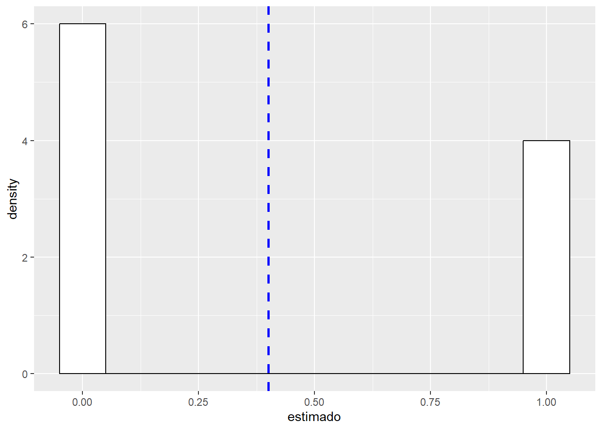
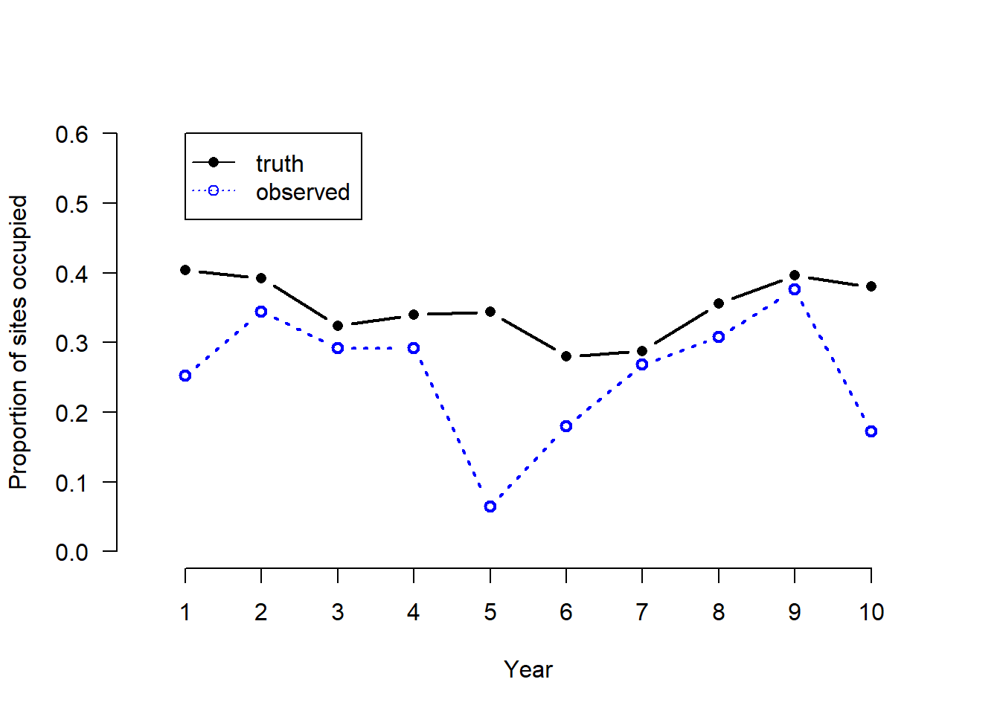
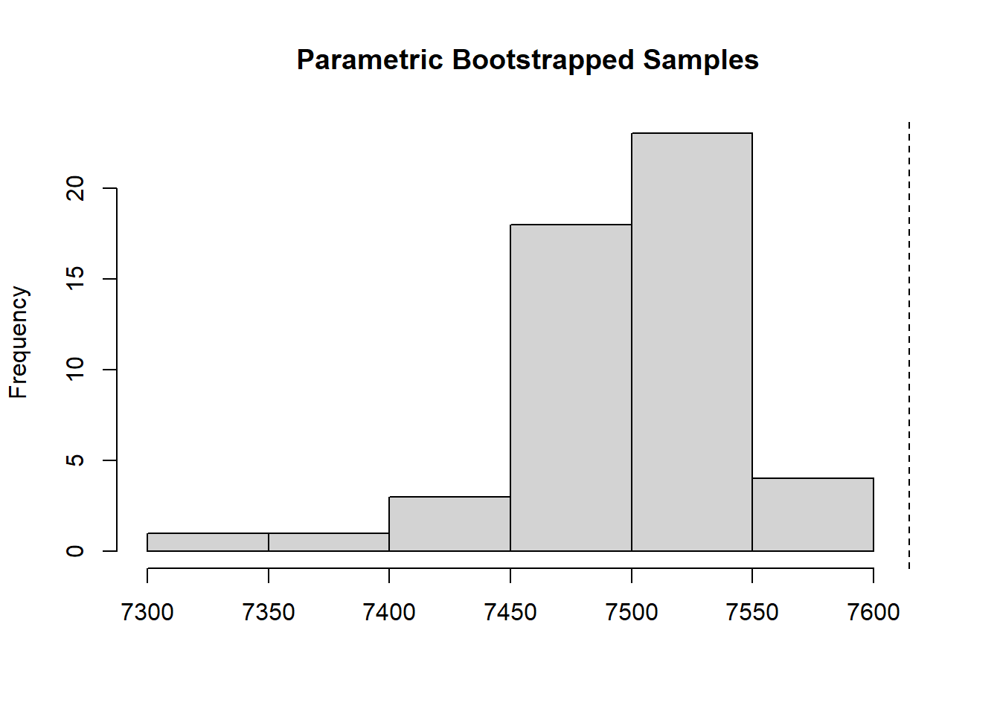

Este documento contiene un ejemplo del modelo de ocupación de una sola especie y varias temporadas. Este modelo fue descrito por MacKenzie et. al (2003) en:
MacKenzie, D. I., J. D. Nichols, J. E. Hines, M. G. Knutson, and A. B. Franklin. 2003. Estimating site occupancy, colonization, and local extinction when a species is detected imperfectly. Ecology 84:2200–2207.
Parámetros Adicionales
Este modelo incluye dos parámetros adicionales que representan la colonización y extinción de cada sitio. Estos dos parámetros adicionales pueden ser modelados con covariables que varían año a año.
Antes de entrar en materia con el modelo dinámico vale la pena que revisemos el modelo básico de ocupación.
Recordemos el Modelo estático
Recordemos que el modelo básico de ocupación de MacKenzie et. al (2002), también es conocido como el modelo estático de ocupación. Este modelo se aplica a una sola especie, y por lo general en una sola temporada.
Donde
ψ es la ocupación y p la probabilidad de detección. Con
β como el coeficiente de la regresión para las co-variables de la ocupación y
α el coeficiente de regresión para las co-variables de la detección.
Si desean conocer en detalle el modelo estático y saber más del poder y potencial de las simulaciones en ecología, les recomiendo seguir el Tutorial Ubicado en este enlace.
Recordemos la forma de la distribución Bernoulli!
La distribución de Bernoulli (o distribución dicotómica), nombrada así por el matemático suizo Jacob Bernoulli (1655-1705).
Esta es una distribución de probabilidad discreta, que toma valor 1 para la probabilidad de éxito (p) y valor 0 para la probabilidad de fracaso (q=1-p).
La distribución de Bernoulli es un caso particular de la distribución binomial, pero con solo dos posibles resultados (éxito o fracaso) unos y ceros.
El proceso Bernoulli es el más simple proceso aleatorio que existe! Imagínemelo como algo tan sencillo como una secuencia de lanzamientos de una moneda. Donde un solo lanzamiento es un “trial” y muchos lanzamientos componen el proceso.
Usemos el siguiente código ejecutándolo varias veces y cambiando los parámetros para entender su efecto en el resultado.
library(ggplot2)ni<-10# numero de datospi<-0.5# probabilidad (~proporcion de unos)# Generemos datos con esa informacion daber<-data.frame(estimado=rbinom(ni, 1, pi)) # Grafiquemos library(ggplot2)ggplot(daber, aes(x=estimado)) +geom_histogram(aes(y=..density..), # Histograma y densidad binwidth=.1, # Ancho del bincolour="black", fill="white") +geom_vline(aes(xintercept=mean(estimado, na.rm=T)), color="blue", linetype="dashed", size=1) # media en azul
Warning: Using `size` aesthetic for lines was deprecated in ggplot2 3.4.0.
ℹ Please use `linewidth` instead.
Warning: The dot-dot notation (`..density..`) was deprecated in ggplot2 3.4.0.
ℹ Please use `after_stat(density)` instead.

Si desean conocer más detalles de la distribución Bernoulli les recomiendo la muy buena explicación de jbstatistics
Y si quieren aún más detalles visiten la clase del profesor Tsitsiklis del MIT.
El algebra y los parámetros de los modelos
Modelo estatico:
\(z_{i} \sim Bernoulli (\psi_{i})\) Proceso Ecológico
\(y_{ij} \sim Bernoulli (z_{i} * p_{ij})\) Proceso de Observación
\(z_{it} \sim Bernoulli (\psi_{i,t})\) Proceso Ecológico
\(y_{ijt} \sim Bernoulli (z_{i} * p_{i,tj})\) Proceso de Observación
con sitio i durante el muestreo j en el tiempo t (años)
Modelo Dinámico considerando colonización y extinción
\(z_{it} \sim Bernoulli (z_{i,t-1\phi it } + (1-z_{i,t-1}) \gamma_{i,t})\) Proceso Ecológico
\(y_{ijt} \sim Bernoulli (z_{it} * p_{ijt})\) Proceso de Observación
De forma Lineal
logit(Ψi,1) = α0 + α1xi1 + . . . + αUxiU.
Ψi,t|zi,t−1 = zi,t−1 × (1 −\(\epsilon_{i}\),t−1) + (1 − zi,t−1) × \(\gamma_{i}\),t−1, for t > 1.
La función Colext dentro del paquete unmarked
Modelo de Ocupación Diámico con datos simulados
Primero generamos un conjunto de datos simple y simulado con valores específicos de año específicos para los parámetros, así como especificaciones de diseño, es decir, número de sitios, años y encuestas por año.
Luego, veremos cómo ajustar un modelo de ocupación dinámico con dependencia del año en los parámetros de probabilidad de colonización, extinción y detección.
Simulando, formateando y resumiendo datos
Para simular los datos, ejecutamos el siguiente código R. Los valores reales para estos parámetros para cada año se extraen aleatoriamente de una distribución uniforme con los límites especificados.
M <-250# Number of sites J <-3# num secondary sample periods T <-10# num primary sample periods psi <-rep(NA, T) # Occupancy probability muZ <- z <-array(dim =c(M, T)) # Expected and realized occurrence y <-array(NA, dim =c(M, J, T)) # Detection histories set.seed(13973) psi[1] <-0.4# Initial occupancy probability p <-c(0.3,0.4,0.5,0.5,0.1,0.3,0.5,0.5,0.6,0.2) phi <-runif(n=T-1, min=0.6, max=0.8) # Survival probability (1-epsilon)gamma <-runif(n=T-1, min=0.1, max=0.2) # Colonization probability # Generate latent states of occurrence # First year z[,1] <-rbinom(M, 1, psi[1]) # Initial occupancy state # Later years for(i in1:M){ # Loop over sites for(k in2:T){ # Loop over years muZ[k] <- z[i, k-1]*phi[k-1] + (1-z[i, k-1])*gamma[k-1] z[i,k] <-rbinom(1, 1, muZ[k]) } } # Generate detection/non-detection data for(i in1:M){ for(k in1:T){ prob <- z[i,k] * p[k] for(j in1:J){ y[i,j,k] <-rbinom(1, 1, prob) } } } # Compute annual population occupancy for (k in2:T){ psi[k] <- psi[k-1]*phi[k-1] + (1-psi[k-1])*gamma[k-1] }
Hemos generado una sola realización del sistema estocástico así definido. La Figura 1 ilustra la cuestión fundamental de la detección imperfecta: la proporción real de sitios ocupados difiere mucho de la proporción observada de sitios ocupados, y debido a que p varía entre años, los datos observados no pueden usarse como un índice válido del parámetro de interés ψi.
plot(1:T, colMeans(z), type ="b", xlab ="Year", ylab ="Proportion of sites occupied", col ="black", xlim=c(0.5, 10.5), xaxp=c(1,10,9), ylim =c(0,0.6), lwd =2, lty =1, frame.plot =FALSE, las =1, pch=16) psi.app <-colMeans(apply(y, c(1,3), max)) lines(1:T, psi.app, type ="b", col ="blue", lty=3, lwd =2) legend(1, 0.6, c("truth", "observed"), col=c("black", "blue"), lty=c(1,3), pch=c(16,1))

Analizando los datos
Para analizar este conjunto de datos con un modelo de ocupación dinámico sin marcar, primero cargamos el paquete, y luego a continuación, formateamos los datos de detección / no detección de una matriz tridimensional (como se genera) en una matriz bidimensional con M filas. Es decir, colocamos las tablas de datos anuales (los segmentos de la matriz 3-D anterior) de lado para producir un diseño “amplio” de los datos. Posteriormente, creamos una matriz que indica el año en que se muestreo cada sitio.
library(unmarked)yy <-matrix(y, M, J*T)year <-matrix(c('01','02','03','04','05','06','07','08','09','10'), nrow(yy), T, byrow=TRUE)
Para organizar los datos en el formato requerido por colext, utilizamos la función unmarkedMultFrame. Los únicos argumentos requeridos son y, los datos de detección / no detección, y numPrimary, el número de estaciones. Los tres tipos de covariables descritos anteriormente también se pueden suministrar utilizando los argumentos siteCovs, annualSiteCovs y obsCovs. En este caso, solo usamos el segundo tipo, que debe tener M filas y T columnas.
Warning: yearlySiteCovs contains characters. Converting them to factors.
summary(simUMF)
unmarkedFrame Object
250 sites
Maximum number of observations per site: 30
Mean number of observations per site: 30
Number of primary survey periods: 10
Number of secondary survey periods: 3
Sites with at least one detection: 195
Tabulation of y observations:
0 1
6430 1070
Yearly-site-level covariates:
year
01 : 250
02 : 250
03 : 250
04 : 250
05 : 250
06 : 250
(Other):1000
Construcción y ajuste de modelos
Estamos listos para adaptar algunos modelos de ocupación dinámica. Ajustaremos un modelo con valores constantes para todos los parámetros (modelo nulo) y otro con dependencia total del tiempo para la probabilidad de colonización, extinción y detección.
# Model with all constant parameters m0 <-colext(psiformula=~1, gammaformula =~1, epsilonformula =~1, pformula =~1, data = simUMF, method="BFGS")summary(m0)
Call:
colext(psiformula = ~1, gammaformula = ~1, epsilonformula = ~1,
pformula = ~1, data = simUMF, method = "BFGS")
Initial (logit-scale):
Estimate SE z P(>|z|)
-0.813 0.158 -5.16 2.46e-07
Colonization (logit-scale):
Estimate SE z P(>|z|)
-1.77 0.0807 -22 2.75e-107
Extinction (logit-scale):
Estimate SE z P(>|z|)
-0.59 0.102 -5.79 7.04e-09
Detection (logit-scale):
Estimate SE z P(>|z|)
-0.0837 0.0562 -1.49 0.137
AIC: 4972.597
Number of sites: 250
optim convergence code: 0
optim iterations: 27
Bootstrap iterations: 0
El tiempo de cálculo fue de solo unos segundos. Tenga en cuenta que todos los parámetros se estimaron en la escala logit. Para volver a transformar a la escala original, simplemente podemos usar la función de logit inverso, llamada plogis en R.
Alternativamente, podemos usar backTransform, que calcula los errores estándar usando el método delta. Los intervalos de confianza también se obtienen fácilmente utilizando la función con fi n. Primero nos recordamos los nombres de los parámetros, que pueden usarse como argumentos para estas funciones.
plogis(-0.813)
[1] 0.3072516
names(m0)
[1] "psi" "col" "ext" "det"
backTransform(m0, type="psi")
Backtransformed linear combination(s) of Initial estimate(s)
Estimate SE LinComb (Intercept)
0.307 0.0335 -0.813 1
Transformation: logistic
Luego ajustamos el modelo de ocupación dinámica con dependencia total del año en los parámetros que describen la dinámica de ocupación y también en la detección. Este es el mismo modelo bajo el cual generamos el conjunto de datos, por lo que esperaríamos estimaciones precisas.
Por defecto en R, un factor como el año en este análisis, se parametriza en términos de una intersección y efectos que representan diferencias. Esto significaría que el parámetro para el primer año es la intersección y los efectos denotarían las diferencias entre los valores de los parámetros en todos los demás años, en relación con el valor del parámetro en el primer año, que sirve como nivel de referencia. Este tratamiento o la parametrización de los efectos es útil para evaluar las diferencias. Para una presentación simple, una parametrización de medias es más práctica. Se puede especificar agregando un -1 a la fórmula para los parámetros dependientes del tiempo
Nuevamente, todas las estimaciones se muestran en la escala logit. Las estimaciones de transformación inversa cuando hay covariables, como el año, implican un paso adicional. Específicamente, necesitamos decir sin marcar los valores de nuestra covariable en los que queremos una estimación. Esto se puede hacer usando backTransform en combinación con linearComb, aunque puede ser más fácil de usar predict.
predic le permite al usuario proporcionar un marco de datos en el que cada fila representa una combinación de valores covariables de interés. A continuación, creamos los data.frames llamados nd y cada fila representa un año. Luego solicitamos estimaciones anuales de la probabilidad de extinción, colonización y detección, y las comparamos con la “verdad”, es decir, los valores con los que simulamos el conjunto de datos. Tenga en cuenta que hay parámetros de extinción y colonización T-1 en este caso, por lo que no es necesario incluir el año “10” en nd.
Predict es mas versatil y devuelve las predicciones junto con errores estándar e intervalos de confianza. Estos se pueden usar para crear graficas. La función with se usa para simplificar el proceso de solicitud de las columnas de data.frame devueltas por predic.
Además de estimar la varianza de una estimación, la rutina de bootstrap paramétrica se puede usar para evaluar la bondad del ajuste. Para este propósito, una estadística de ajuste, es decir, una que compara los valores observados y esperados se evalúan utilizando el modelo ajustado original y muchos otros modelos ajustados a conjuntos de datos simulados. La simulación produce una aproximación de la distribución de la estadística de ajuste, y un valor P puede calcularse como la proporción de valores simulados mayor que el valor observado. Hosmer y col. (1997) encontraron que un estadístico χ2 funcionó razonablemente bien al evaluar la falta de ajuste para los modelos de regresión logística. No conocemos estudios que evalúen formalmente el desempeño de varias estadísticas de ajuste para modelos de ocupación dinámica, por lo que este enfoque debe considerarse experimental. Las estadísticas de ajuste aplicadas a los historiales de encuentros agregados ofrecen un enfoque alternativo (MacKenzie y Bailey 2004), pero son difíciles de implementar cuando J * T es alto y hay valores faltantes o covariables continuas.
chisq <-function(fm) { umf <-getData(fm) y <-getY(umf) sr <- fm@sitesRemoved if(length(sr)>0) y <- y[-sr,,drop=FALSE] fv <-fitted(fm, na.rm=TRUE) y[is.na(fv)] <-NAsum((y-fv)^2/(fv*(1-fv))) }set.seed(344) pb.gof <-parboot(m0, statistic=chisq, nsim=100)plot(pb.gof)

La figura indica que, como se esperaba, el modelo de parámetro constante no se ajusta bien a los datos.
Modelo de Ocupación Dinámico con datos del mundo real
En un analisis de los datos de la red de monitoreo TEAM usamos un modelo de ocupación dinámico.
Utilizamos datos de trampa de cámara que la Red de Tropical Ecology Assessment and Monitoring (TEAM), recolectados de forma regular (en los mismos sitios) a lo largo de un transecto del Volcán Barva en Costa Rica, durante 5 años.
Mostramos cómo estos datos pueden usarse para calcular los indicadores temporales de las especies de mamíferos de interés en el área.
Se encontraron descensos en la ocupación de algunas especies de mamiferos medianos.
Conclusión
Esperamos que haya disfrutado de este curso.
Recuerde que la práctica es fundamental para desarrollar sus habilidades de R, por lo que le recomendamos que intente hacer de R una parte integral de sus flujos de trabajo. Afortunadamente, con la abundancia de recursos disponibles gratuitamente y la inmensa comunidad de usuarios, ¡aprender R nunca ha sido tan fácil!
Obtenga ayuda
Escribir código consiste en ensayo error y un 90% buscar la respuesta en Google.
Si busca un problema en la web, como “ggplot remove legend”, normalmente obtendrá una respuesta bastante decente en Stack Overflow o en un sitio similar.
Si la respuesta aún no existe en línea, regístrese en Stack Overflow y pregúntela usted mismo (pero primer dedique tiempo suficiente en buscar … ¡nadie quiere ser etiquetado por duplicar una pregunta existente!).
Otra buena idea es buscar un grupo de apoyo local. El uso de R es una experiencia emocional, la curva de aprendizaje al comienzo es bien empinada, la frustración es común, pero luego de un tiempo la alegría de encontrar una solución puede ayudarnos a persistir. Tener a otras personas para ayudar, o simplemente escuchar sus frustraciones es una gran motivación para seguir aprendiendo R.
Fiske, Ian, and Richard Chandler. 2011. “unmarked: An R Package for Fitting Hierarchical Models of Wildlife Occurrence and Abundance.”Journal of Statistical Software 43 (10): 1–23. https://www.jstatsoft.org/v43/i10/.
Kellner, Kenneth F., Adam D. Smith, J. Andrew Royle, Marc Kery, Jerrold L. Belant, and Richard B. Chandler. 2023. “The unmarkedR Package: Twelve Years of Advances in Occurrence and Abundance Modelling in Ecology.”Methods in Ecology and Evolution 14 (6): 1408–15. https://www.jstatsoft.org/v43/i10/.
R Core Team. 2024. R: A Language and Environment for Statistical Computing. Vienna, Austria: R Foundation for Statistical Computing. https://www.R-project.org/.
Wickham, Hadley, Mara Averick, Jennifer Bryan, Winston Chang, Lucy D’Agostino McGowan, Romain François, Garrett Grolemund, et al. 2019. “Welcome to the tidyverse.”Journal of Open Source Software 4 (43): 1686. https://doi.org/10.21105/joss.01686.
@online{lizcano2025,
author = {Lizcano, Diego},
title = {Modelado de La {Ocupación,} Abundancia y Densidad de
Poblaciones: Enfoque Frecuentista y Bayesiano En {R.} {Modelo} de
Ocupación de Multiples Temporadas},
date = {2025-06-24},
url = {https://dlizcano.github.io/occu_multi_season/},
langid = {en}
}
For attribution, please cite this work as:
Lizcano, Diego. 2025. “Modelado de La Ocupación, Abundancia y
Densidad de Poblaciones: Enfoque Frecuentista y Bayesiano En R. Modelo
de Ocupación de Multiples Temporadas.” June 24, 2025. https://dlizcano.github.io/occu_multi_season/.
![]()